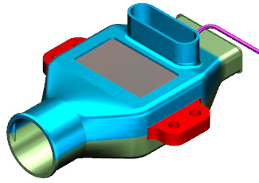

点击标准工具条上的新建 。
在新建对话框的模型选项卡中，选择模板组中的装配。
在新文件名组的名称输入框中，键入 production_assembly 并回车。
在添加组件对话框的部件组中，选择 bottom_start.prt。
按住 Ctrl 并选择 top_start.prt。
点击打开 。
在部件名对话框中，选择 wav3_sys_eng_inside 并点击确定。
在添加组件对话框中，设置如下参数：
放置组：
定位 = 绝对原点
分散 =
复制组：
多重添加 = 无
设置组：
引用集 = 模型
图层选项 = 原始的
点击确定。
在这个产品装配中，您可以创建装配约束、爆炸视图、布置或图纸。
